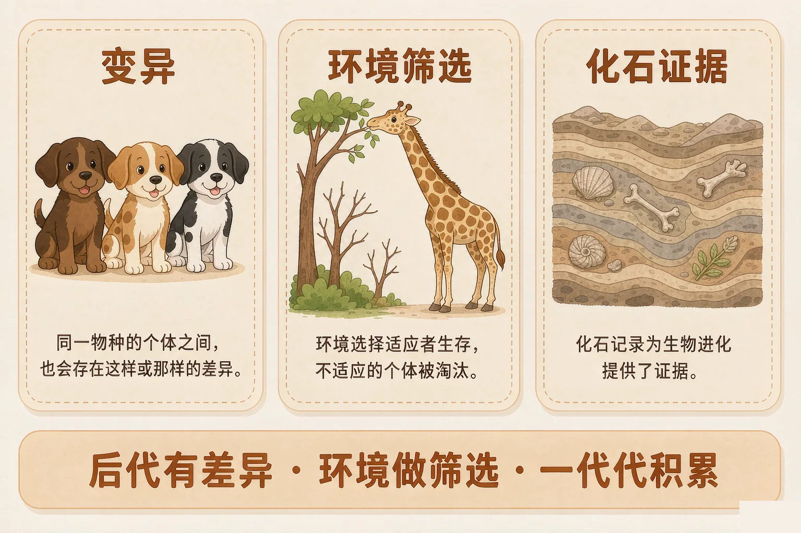
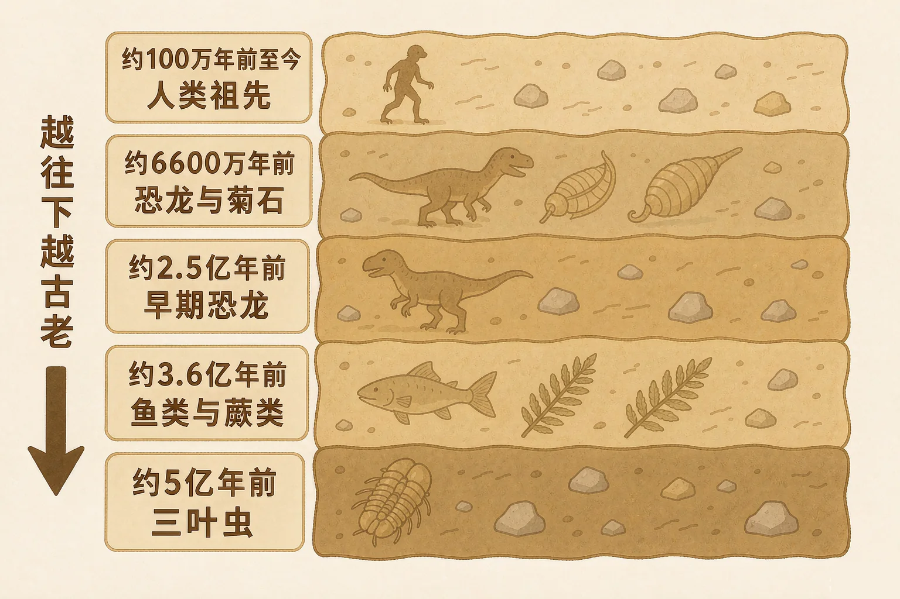
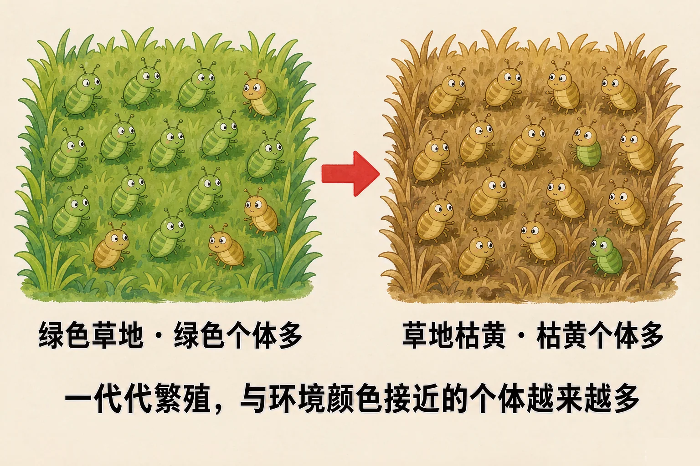

Gallery
v1.0.0 · skill v7.22.0
小学六年级 · 生命科学 · 生命的延续与进化
长颈鹿的脖子那么长，是它自己努力伸长的，还是一代代被选出来的？

选一个你真正好奇的问题，后面的探究都会围着它转。
选择或输入后，这节课会围绕你的问题展开。
先凭直觉选一个，选完立刻看到解释——错了也没关系，正好知道要重点听哪里。
1. 长颈鹿的脖子很长，下面哪种说法最接近科学的解释？
进化的顺序是：先有变异，再由环境筛选，最后一代代积累。错因提醒：常见错误是把顺序弄反，误认为生物先努力改变身体，再把改变传给孩子。
2. 同一个妈妈生的几只小狗，毛色和个头都不太一样。这种现象叫做：
同种生物后代之间的差异叫做变异，它是进化的原材料。错因提醒：不要把变异和进化搞混——变异是每一代都会出现的差异，进化是很多代积累之后的结果。
3. 科学家凭什么说几亿年前的生物和现在不一样？
化石保存在一层层岩层里，越往下的越古老。把化石按地层顺序排起来，就能看到生物确实变了。这个问题先记在心里，等下我们要挖一挖地层。
要弄明白长脖子，得先备好两样东西：变异这份原材料，和化石这本记录本。
变异
同种生物的后代之间总有差异，而且这种差异能遗传下去。
化石
化石是指保存在岩层里的古生物遗体或遗迹，是进化最直接的证据。

🔍 深层理解 换个角度再看一遍这件事，看看能不能说出背后的原理。
看见它：同一个妈妈生的孩子、同一棵树结的果子，都不会一模一样。差异是普遍存在的，不是偶然。
解释它：为什么化石能证明进化？因为不同年代的岩层里埋着不同的生物，把它们按顺序排起来，就看到了生物样子的变化过程。
比较它：变异是每一代都在发生的小差异；进化是很多很多代积累之后才能看出来的大变化。一个短，一个长，不要搞混。
点一点每一层岩石，看看那一层里埋着什么化石，再比一比它和今天的生物像不像。
备齐了变异和化石，就能回答开头的问题了：先有长短不同的变异，再被环境筛出活下来的那一批。

误认为"长颈鹿想变长就变长"，这是把顺序弄反了。正确顺序是：先有变异，再由环境筛选，最后一代代积累。一辈子练出来的变化，不会写进遗传信息里传给后代。
先选一种环境，然后连点几次「让种群繁殖」，观察与环境颜色接近的个体比例怎么变化。
题目：有人说，长颈鹿因为天天想吃高处的树叶，就拼命把脖子伸长，脖子变长以后又传给了宝宝。这个说法对吗？请说明理由。
把"用进废退"当成进化。它错在两点：一是把顺序弄反了，误认为用得多的器官会自己变强；二是把练出来的变化当成了能遗传的变化。请记住那句口诀：变异是原料，环境是筛子，时间攒出来。
先凭直觉选一个，选完立刻看到解释——错了也没关系，正好知道要重点听哪里。
1. 下面哪句话是正确的？
变异在一切生物身上都普遍存在，它是进化的原材料，不等于进化本身。错因提醒：把变异和进化搞混，是这一课最高频的常见错误。
2. 长颈鹿的祖先里，脖子长的个体为什么能留下更多后代？
能不能活下来，看的是这个特点在当下环境里有没有用。错因提醒：容易误认为「努力」能直接改变身体并遗传，其实努力不改变遗传信息，活下来的机会才决定谁留下后代。
3. 越深的地层里，化石有什么特点？
岩层一层层沉积，越下面越早形成，所以越深处的化石越古老。错因提醒：常见错误是把地层上下顺序搞反，误认为最上面那层最古老。
博物馆的长颈鹿展板缺一段解说词。请你当一次解说员，把长脖子的来历讲给小朋友听。
必须用上这四个词：变异 · 环境筛选 · 一代代积累 · 化石证据
第一步：先想好顺序
先说什么，再说什么，最后用什么证据收尾？把顺序写在下面。
第二步：写解说词（三到五句话）
先凭直觉选一个，选完立刻看到解释——错了也没关系，正好知道要重点听哪里。
1. 田里长期使用同一种杀虫剂后，抗药的小虫越来越多。用今天学的说法解释，最合理的是：
又是先有变异、再被筛选的老规律。错因提醒：不要误认为生物能「为了」生存而主动改变自己，变异是随机出现的，环境只负责筛选。
2. 某片断崖上的地雀，喙又厚又大；附近平原上的同种地雀，喙又细又小。最合理的解释是：
同种生物在不同环境里被筛选出不同特点，时间久了就出现明显差别。
3. 如果一片草原一直不发生变化，草丛里的小虫会怎么样？
只要环境不变，筛选的方向就基本不变，比例会稳定下来；变异仍然存在，只是没有朝一个方向积累的动力。
回到开头的问题：长脖子不是伸出来的，也不是想出来的。是祖先里先有了脖子长短的变异，环境把能吃到高处叶子的那一批留了下来，一代一代积累，才筛出了今天的长颈鹿。
给别人讲一遍：请用"变异、环境筛选、一代代积累"这三个词，说清长脖子是怎么来的。
三层练习，做完第一、二层就算通关；第三层留给愿意继续探索的同学。
⭐ 基础巩固（必做）
⭐⭐ 能力应用（必做）
⭐⭐⭐ 迁移挑战（选做）
左边是学它之前要先会的，右边是学会之后可以继续探索的，下面是同一领域的伙伴知识。
图谱正在加载：首次进入需下载知识索引（约 1–3 秒），加载完成后本行会自动消失。